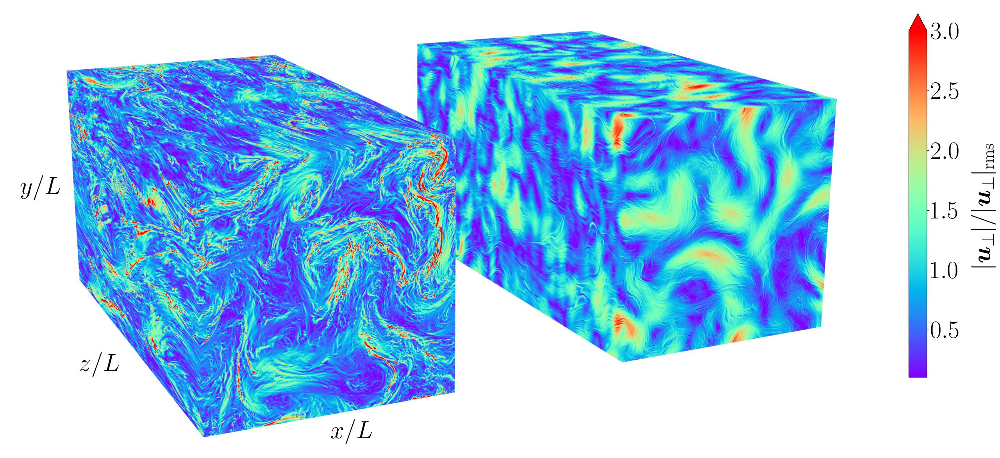

About
I am a theoretical physicist, in that I make use of mathematical and computational tools to investigate the natural world.
My main area of research is into the dynamics of plasmas (partially- or fully-ionised gases) and the turbulence (chaotic, random motions) that they generate.
I have a particular interest in magnetic-confinement fusion,
though I also work on plasma physics problems in astrophysical contexts, such the solar wind. For more details, visit the research page.
Growing up in both the UK and Australia, I completed my undergraduate (MMathPhys, 2018) and graduate (DPhil in Theoretical Physics, 2023)
studies at the
University of Oxford
. My
thesis
explored electromagnetic turbulence
in magnetic-confinement fusion devices, for which I was lucky enough to receive the
EPS Plasma Physics Division PhD Research Award
in 2024.
I was then a Postdoctoral Research Associate in the space physics group at the
University of Otago
, where I worked on solar-wind turbulence.
I am currently an Associate Research Scientist in the theory department of
Princeton Plasma Physics Laboratory
.
A complete CV is available upon written request.
Beyond my research, I am a keen cyclist and runner, believing that one of the best ways to explore the world is either on two wheels or on two feet.
Some of places that I have encountered on my travels are documented on the photos page.
Research
A plasma is a partially- or fully-ionised gas
consisting of charged ions and electrons that interact through electromagnetic forces.
Sometimes referred to as the 'fourth state of matter', plasmas are prevalent throughout the universe,
constituting the majority of observable baryonic matter.
Given their ubiquity, it is unsurprising that the physics of plasmas is relevant in broad array of contexts:
primordial magnetogenesis
,
astrophysical jets from compact objects,
cosmic-ray propagation,
stellar dynamics,
controlled nuclear fusion
,
and even the plasma displays that allow you to watch the latest TV drama.
My research focuses on plasma turbulence in both magnetic-confinement-fusion
and solar-wind contexts, which I describe further below.
Magnetic-confinement fusion
Fusion power aims to generate electricity by harnessing the large amounts of energy that can be released in a nuclear fusion reaction, in which two lighter
atomic nuclei combine to form a heavier nucleus, liberating kinetic energy. The sun, like other stars, is a natural fusion reactor, consisting of a plasma
held together by gravitational forces.
Magnetic-confinement fusion
(MCF) devices attempt to recreate these conditions on earth, making use of external electromagnetic coils to generate a series
of nested magnetic field 'surfaces' that wrap around the toroidal (i.e., doughnut-shaped) vessel and help confine the plasma. Unfortunately for the fusion
programme, heat and particle losses in
tokamaks
and (neoclassically optimised)
stellarators
are dominated by turbulence: a random ensemble of small-scale fluctuations that renders the behaviour of the plasma difficult to predict and often leads to a
degradation in the plasma confinement.
 The majority of my research effort is dedicated to investigating instabilities and turbulence in high-beta fusion plasmas
(e.g.,
spherical tokamaks
), in which the magnetic-field perturbations
generated by the plasma itself compete with the externally imposed magnetic field. Although most reactor-relevant designs are set to operate in the
electromagnetic regime, comparatively little is understood about the associated turbulence: we have not yet fully characterised its mechanisms of injection
and saturation, its transport properties, its ability to support reduced transport states, etc. I delve into these questions using a combination of analytical and
computational tools, often within the
gyrokinetic
framework. Recently, I was able to demonstrate the existence of the novel
'thermo-Alfvénic instability'
, whose feedback mechanism in the curvature-dominated regime is shown above.
The majority of my research effort is dedicated to investigating instabilities and turbulence in high-beta fusion plasmas
(e.g.,
spherical tokamaks
), in which the magnetic-field perturbations
generated by the plasma itself compete with the externally imposed magnetic field. Although most reactor-relevant designs are set to operate in the
electromagnetic regime, comparatively little is understood about the associated turbulence: we have not yet fully characterised its mechanisms of injection
and saturation, its transport properties, its ability to support reduced transport states, etc. I delve into these questions using a combination of analytical and
computational tools, often within the
gyrokinetic
framework. Recently, I was able to demonstrate the existence of the novel
'thermo-Alfvénic instability'
, whose feedback mechanism in the curvature-dominated regime is shown above.
Solar-wind turbulence
The solar corona, the Sun's outer atmosphere, is astonishingly hot, with temperatures reaching millions of degrees, far hotter than those at the surface. This intense heat,
along with the slow, often chaotic motion of structures like
coronal loops
, drives the solar wind: a continuous stream of turbulent plasma that flows outward from the Sun. The interaction
of this solar wind with the Earth's
magnetosphere
is responsible for the magnificent polar auroras that are observed at higher latitudes.
The plasma that makes up the solar wind is primarily collisionless, meaning its characteristic dynamics are much faster than those associated with inter-particle collisions.
Given that these collisions are the mechanism usually responsible for equailising the temperatures of the species (electrons and ions) that make up the plasma, a key question
is what then determines the partitioning of turbulent energy between them. In particular, ions are observed to be hotter than electrons even though the most
'straightforward' theories of plasma turbulence predict the opposite.
A possible explanation for this preferential heating of ions is the so-called 'helicity barrier' that emerges when the energy in the turbulent fluctuations
propagating away from the Sun is much greater than in those propagating towards it. In this regime, nonlinear conservation laws prevent the energy from reaching
small spatial scales where it would typically be absorbed by electrons, causing it to instead build up in large-scale structures and heat ions.
The signatures of helicity-barrier mediated turbulence (e.g., steep 'transition range' energy spectra), are supported by in-situ observations like those made by NASA's
Parker Solar Probe
. My work focuses on characterising the conditions under which the helicity barrier arises and understanding its implications for turbulent heating in the solar wind.

Turbulence in isothermal KREHM
Teaching
During my PhD, I gave tutorials and classes in the following:
- Graduate courses:
Kinetic Theory;
Advanced Topics in Plasma Physics
- Undergraduate courses: General Relativity; Fluids; Statistical Physics; Mathematical Methods; Biophysics
I was also an undergraduate physics admissions interviewer for Merton College (Oxford) in 2019, 2020, and 2022.
General Relativity
As part of my tutorials for General Relativity, I wrote a set of problem sets covering:
- Tensors, derivatives and spacetime (7 problems)
- Geodesics, curvature and Schwarzschild (6 problems)
- Linearised gravity (6 problems)
- Cosmology (6 problems)
These are intended to accompany the third year MPhys General Relativity course at Oxford University.
A combined document with all four problem sets is available
here
(solutions).
There is also an accompanying practise
exam
(solutions).
If you happen to find errors, please let me know via email.
Undergraduate notes
During my undergraduate studies at Oxford, I wrote a series of rough notes on the various first, second and third year courses.
These are freely available to undergraduates on the PJCC website here
(Oxford network or SSO login required).

Photos
Below are some photos of places and things that I thought noteworthy enough to share. The approximate locations are linked for curious viewers (click on the name).
Lake Carnegie
The Hunter Valley

The Three Sisters
Bay of Fires
Mossman Gorge

University of Otago clocktower

Australian War Memorial

Adelaide Botanic Garden
Cathedral de Salamanca
Mutijulu Waterhole

Circular Quay

Lake Matheson
Milford Sound
Teddy's Lookout
Urunga Boardwalk
Jenolan Caves
Huskisson Beach